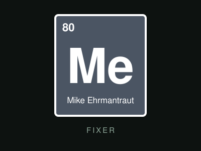

Breaking Bad es una serie creada por Vince Gilligan y emitida entre 2008 y 2013. Cuenta la historia de un profesor de química que, tras recibir un diagnóstico de cáncer, se adentra en el mundo del narcotráfico. Su fuerza está en unos personajes inolvidables, desde el propio Walter White hasta los socios, rivales y familiares que lo rodean. En esta página, te invitamos a conocer a los principales.
Walter White

Walter White, interpretado por Bryan Cranston, es un profesor de química de secundaria en Albuquerque, Nuevo México. Brillante pero frustrado, recibe el diagnóstico de un cáncer de pulmón y decide fabricar metanfetamina de una pureza inigualable para dejar dinero a su familia. Así nace su alter ego, Heisenberg, y con él una de las transformaciones más recordadas de la televisión.
Más sobre Walter White
Jesse Pinkman

Jesse Pinkman, interpretado por Aaron Paul, es un antiguo alumno de Walter y pequeño distribuidor de drogas. Se convierte en su socio en el negocio y, entre errores, culpa y lealtad, termina siendo el corazón emocional de la serie. Su inconfundible "yo" y su sentido del humor suavizan los momentos más oscuros.
Más sobre Jesse Pinkman
Saul Goodman

Saul Goodman, interpretado por Bob Odenkirk, es un abogado penalista de oficina llamativa y publicidad exagerada cuyo lema es "mejor llama a Saul". Aparece a partir de la segunda temporada y se vuelve tan popular que protagoniza su propia serie derivada, Better Call Saul, que se estrenó en 2015.
Más sobre Saul Goodman
Gus Fring

Gustavo Fring, interpretado por Giancarlo Esposito, es el amable dueño de la cadena de restaurantes de pollo frito Los Pollos Hermanos. Detrás de su imagen impecable de empresario respetado dirige una enorme red de distribución. Es un rival calculador, paciente y siempre elegante.
Más sobre Gus Fring
Skyler White
Skyler White, interpretada por Anna Gunn, es la esposa de Walter. Atenta, inteligente y con experiencia en contabilidad, descubre poco a poco el secreto de su marido y debe decidir hasta dónde está dispuesta a llegar para proteger a sus hijos. Su personaje muestra el costo humano de la doble vida de Walter.
Más sobre Skyler White
Hank Schrader

Hank Schrader, interpretado por Dean Norris, es el cuñado de Walter y agente de la DEA. Bromista, seguro de sí mismo y muy dedicado a su trabajo, persigue al misterioso Heisenberg sin imaginar lo cerca que lo tiene. Su investigación es uno de los hilos centrales de la historia.
Más sobre Hank Schrader
Mike Ehrmantraut

Mike Ehrmantraut, interpretado por Jonathan Banks, es un exoficial de policía de Filadelfia que trabaja como encargado de seguridad y "limpiador" de problemas. Pragmático, de pocas palabras y con un fuerte código personal, es una de las figuras más respetadas del mundo criminal de Albuquerque.
Más sobre Mike Ehrmantraut